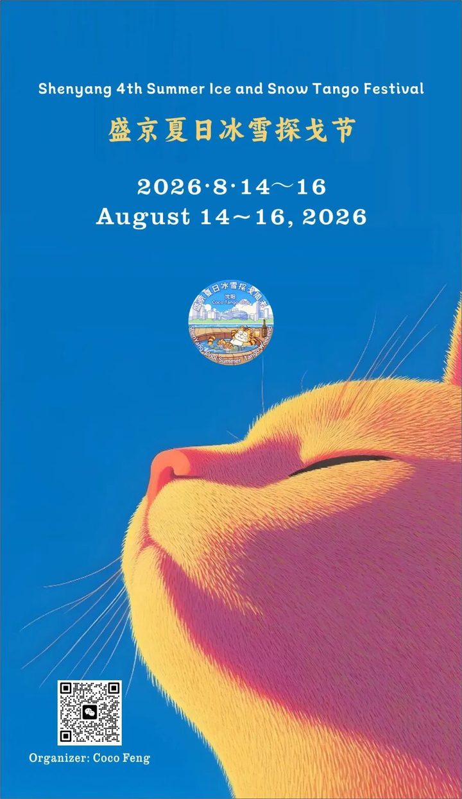
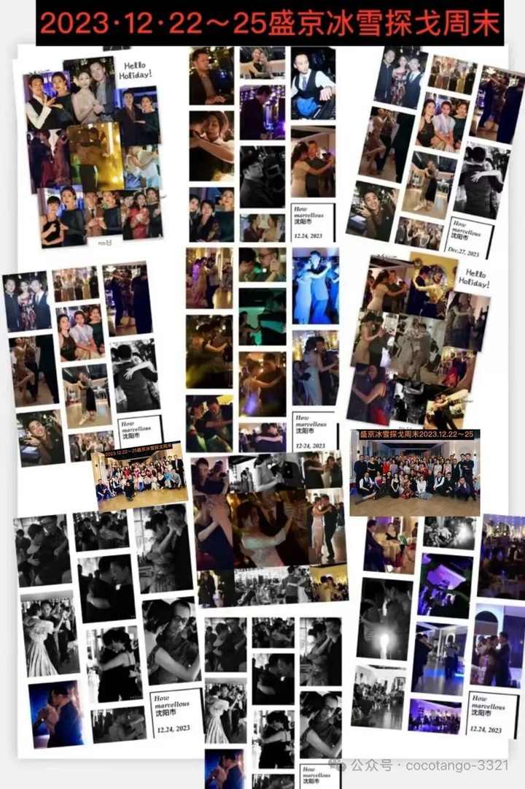
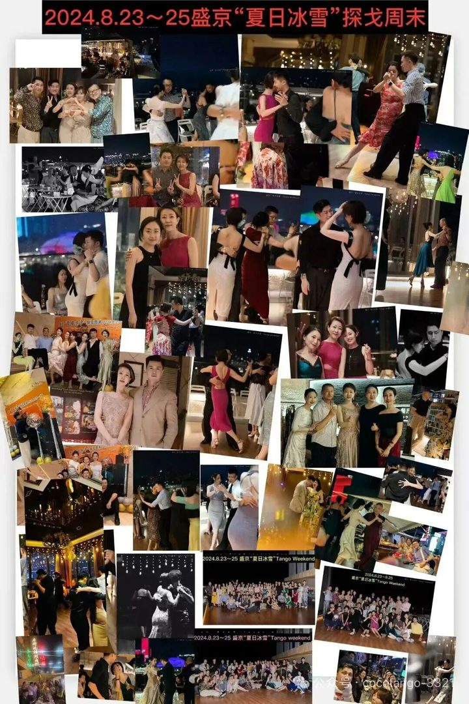
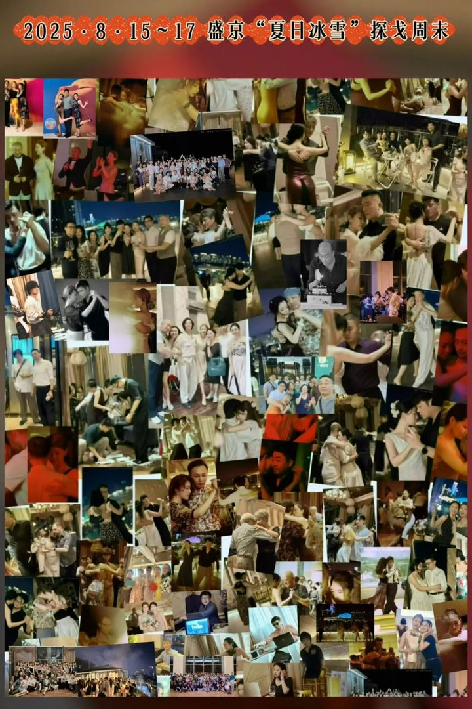

다른 지역이 8월에도 무더위 속에 있을 때, 북위 41도의 선양은 입추 뒤 첫 서늘한 바람을 맞습니다. 8월 저녁 산들바람 속에서 춤출 수 있는 도시입니다. 선양의 옛 이름은 성징, 봉천이며 청나라의 발상지입니다. 1625년 누르하치가 이곳을 수도로 정했습니다.
선양 고궁은 산하이관 바깥의 유일한 황실 건축군입니다. 그에 어울리는 푸링(동릉)과 자오링(북릉)에는 청 건국의 군주가 잠들어 있고, 자오링은 황타이지의 능입니다. 장씨 수부는 중국과 서양 양식을 섞어 민국 시기를 증언합니다. 랴오닝성 박물관은 신중국 최초의 박물관입니다. 해 질 무렵에는 훈허 강변을 걸을 수 있습니다.
“닭 뼈 도시”라는 말은 빈말이 아닙니다. 튀김, 구이, 훈제, 삶기, 매운 볶음까지 맛이 다양하고, 티에시구 시홍스 야시장에는 “닭 뼈 박물관”도 있습니다. 밤이 되면 꼬치에 술을 곁들이는 것이 선양다운 방법입니다. 백 년의 시타 거리에서는 한국식 고기구이와 둥베이 흙가마 구이가 만납니다. 궈바오러우, 무쇠솥 조림, 라오볜 교자, 마자 샤오마이, 그리고 여름에도 먹을 수 있는 얼린 배가 있습니다.
“중국 목욕은 둥베이를 보고, 둥베이 목욕은 선양을 본다.” 선양에는 크고 작은 목욕탕이 천 곳이 넘습니다. 목욕, 사우나, 때밀이, 마사지, 음식, 휴식까지 반나절을 쓰면 이곳 생활을 빨리 알 수 있습니다.
8월 13일 (목) 20:00–24:00, 시티 투어 이후. 밀롱가 뒤 야식 꼬치 after가 있습니다.
8월 14–16일 19:10–20:20, 8월 17일 18:00. 매일 모임 식사가 있으며 자유 참여, 사전 신청이 필요합니다. 궈바오러우 등 랴오닝 요리를 함께 맛봅니다.
8월 17일 (월). 행사장 호텔 1층 로비와 바로 연결된 1.5만㎡ 일본식 온천 목욕탕에서 하루를 보낼 수 있습니다. 손목 밴드로 각자 결제합니다.
8월 17일 (월) 20:00–24:00, 이후 after가 있습니다.


